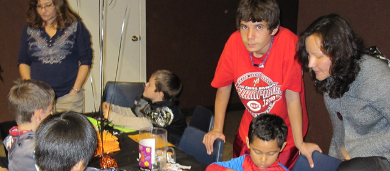
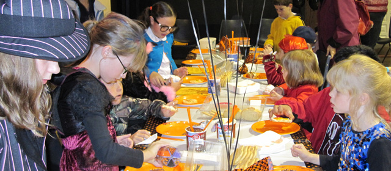
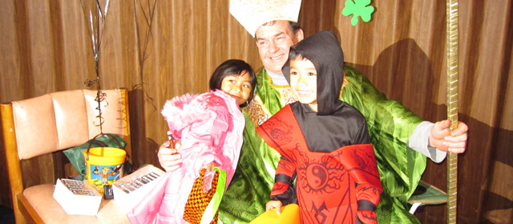

Where All Are Welcome
Call the Parish office : 916-985-2065
Family Fellowship



Connect with other St. John’s parishioners while enjoying fun, faith-inspired activities for the entire family. Family Fellowship events are scheduled throughout the year and are a great way to serve and become a part of the St. John’s community.
Members
St. John’s parishioners and prospective-parishioners of all ages are welcome!
Contact
Katie McCoy and Mary Wilhelm at: FamilyFellowhip@StJohnsFolsom.org